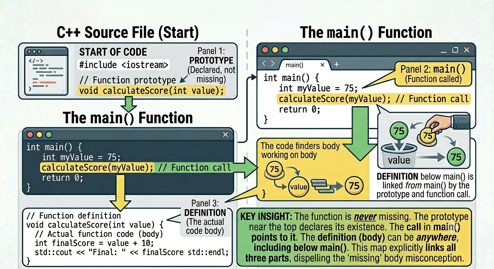
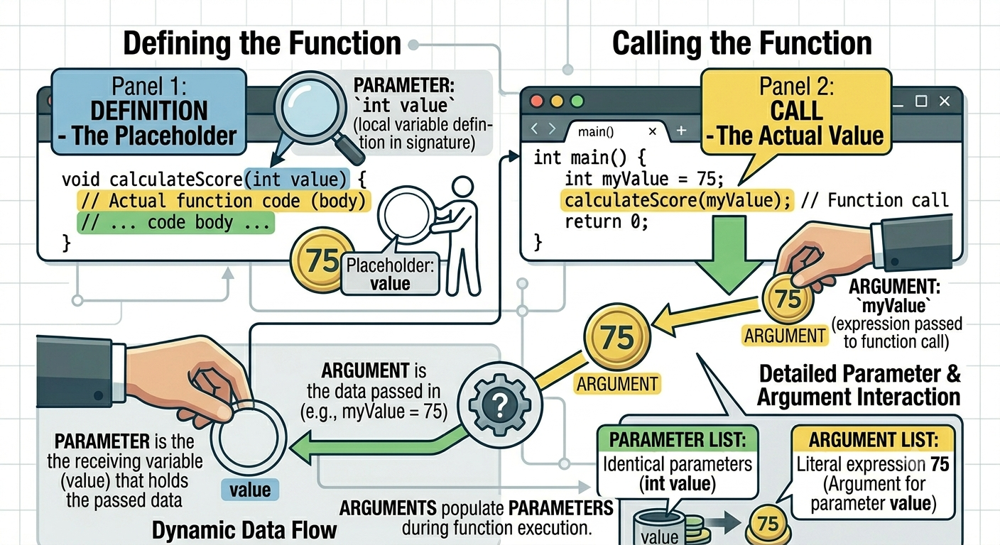

Main as Coordinator
main() should show the program’s outline before the implementation details.
C++
main() is easy to scan.main() can hide the program’s structure inside many details.main() should show the program’s outline before the implementation details.
| Input | Processing | Output |
|---|---|---|
| scores typed by user | calculate total and average | printed report |
Functions do not change what the program can do. They reorganize where the processing is written.
| Step | Location | What Happens |
|---|---|---|
| 1 | main() |
Program reaches a function call |
| 2 | function | Processing happens inside the function |
| 3 | main() |
Execution returns to the next line |
An execution trace now follows control into and out of functions.
The program begins in main().
displayMenu() or calculateTotal().main() and function definitions below main().main() helps the reader see the program’s structure first.main().main().
Function call overview
Before prints first.After prints when control returns to main().A function can call another function.
main() starts the call chain.
person is a parameter."Maya" is an argument.
Arguments vs parameters
The call sends "Maya" into the function, where person stores the copy.
One function can handle many different values.
Separate parameters with commas.
Arguments match parameters by position.
number exists only inside printDouble().
int is the return type.return sends a value back to the caller.The variable total stores the value returned by add().
The value after return must be compatible with the function’s return type.
main() calls add(3, 4).
void functions are for action-only work.void means the function does not send a value back.The visible result is the action the function performs.
Use void when the caller needs an action, not an answer.
return; exits a void function early, but it does not return a value.
| Use This | When |
|---|---|
| return value | the caller needs an answer |
void |
the function performs an action |
Choose based on what the caller needs after the function runs.
void functions do not return values.void functions perform actions without returning a value.main() show the program outline.main().The function calls make the program structure visible.
main() outline as four function calls.main().main().displayHeader.main() to below main() and add a prototype.Each parameter has its own type and name.
greet("Maya").void greet(string person).displayPrice(string item, double price).The return type appears before the function name.
double.add(4, 5) in a variable.add(4, 5).void for functions that perform actions.void when the caller needs an answer.These functions do work, but they do not send a value back.
calculateTax should be void or value-returning.displayMenu should be void or value-returning.displayHeader().void and a return value?CISP 400 · Fowler